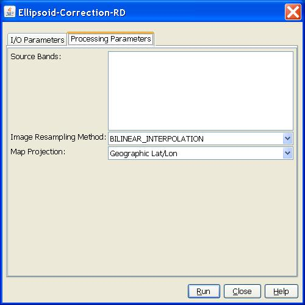

Ellipsoid Correction RD Operator
The operator implements the Range Doppler
orthorectification method [1].
The implementation is exactly the same as for the Range Doppler Terrain Correction operator
except that the averaged scene height is used instead of DEM.
Resampling Method Supported
- nearest_neighbour
- bilinear_interpolation
- cubic_convolution
Map Projection Supported
Right now the following projections are supported by NEXT:
- Geographic Lat/Lon
- Lambert Conformal Conic
- Stereographic
- Transverse Mercator
- UTM
- Universal Polar Stereographic North
- Universal Polar Stereographic South
Parameters Used
The following parameters are used by the operator:
- Source Band: All bands (real or virtual) of the source
product. User can select
one or more bands. For complex product, i and q bands must be selected
together. If
no bands are selected, then by default all bands are selected.
- Image resampling method: Interpolation methods for
obtaining pixel values from
source image. There are three interpolation methods available: nearest
neighbour,
bi-linear and cubic interpolations.
- Map Projection: The map projection types. The orthorectified image will be presented with the user selected map projection.

[1] Small D., Schubert A.,
Guide to ASAR Geocoding, Issue 1.0, 19.03.2008